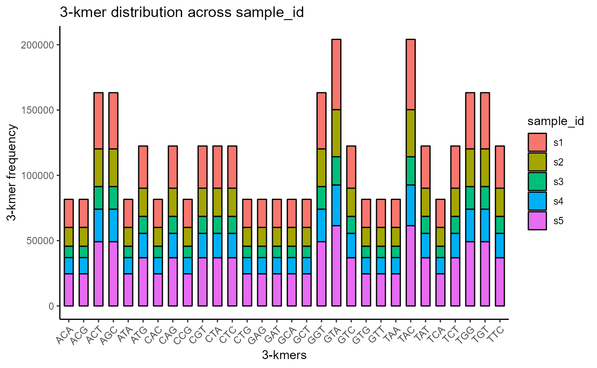
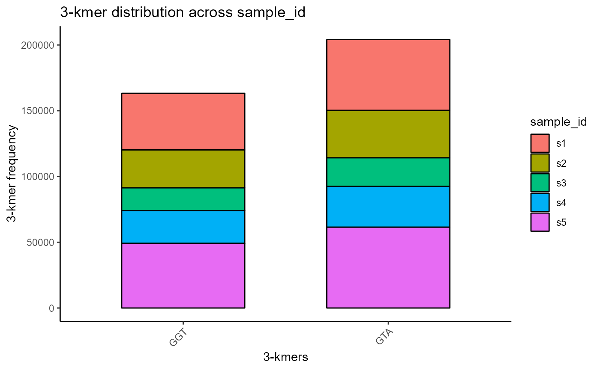
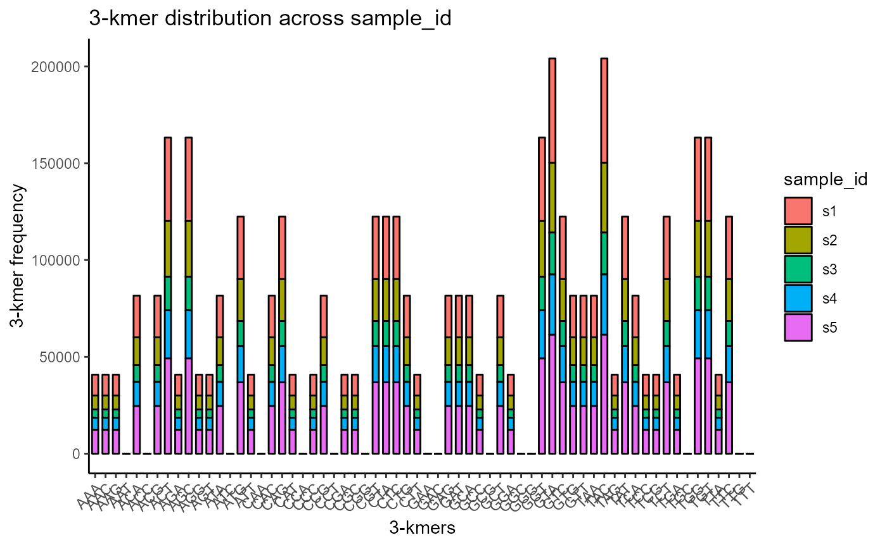
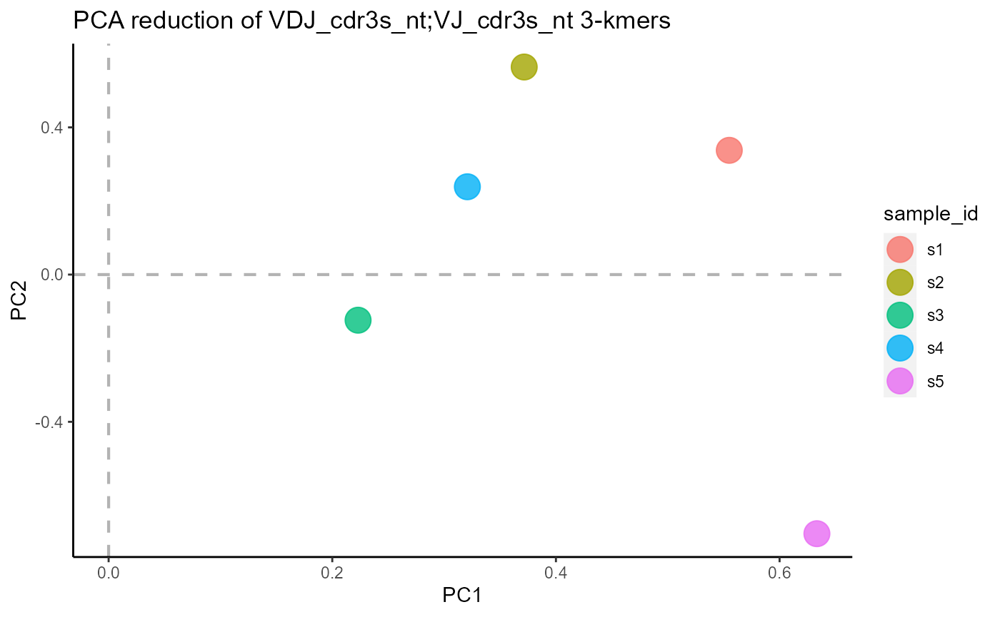
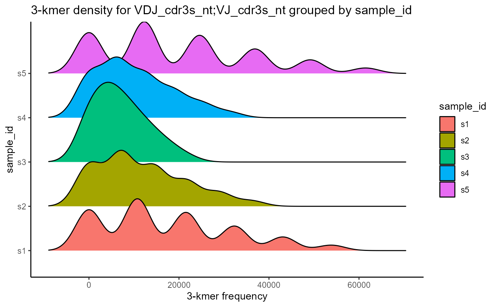
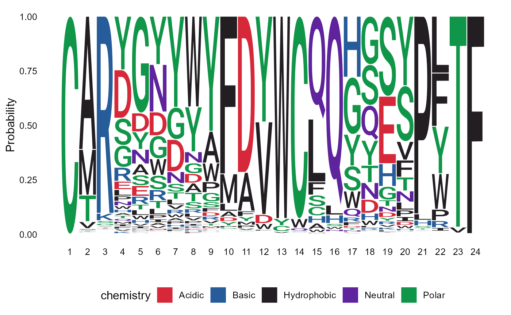

vignettes/Kmers.Rmd
Kmers.RmdThe Platypus family of packages are meant to provide potential pipelines and examples relevant to the broad field of computational immunology. The core set of functions can be found at https://github.com/alexyermanos/Platypus and examples of use can be found in the publications https://doi.org/10.1093/nargab/lqab023 and insert biorxiv database manuscript here
Stay tuned for updates https://twitter.com/AlexYermanos
This vignette will focus on kmer and sequence motif analyses at a repertoire level. The two main functions used are VDJ_logoplot_vector for sequence logoplots and VDJ_kmers for kmer distributions visualization.
The output of the VDJ_GEX_matrix is the main object for all downstream functions in Platypus. We can create this directly into the R session by using the public data available on PlatypusDB. We will use the VDJ data of bone marrow plasma cells from five mice that were immunized with OVA (and the MPLA adjuvant) from Neumeier^, Yermanos^ et al 2022 PNAS.
PlatypusDB_fetch(PlatypusDB.links = c("neumeier2021b//VDJmatrix"),
load.to.enviroment = T, combine.objects = F)## 2022-08-07 20:34:12: Starting download of neumeier2021b__VDJmatrix.RData...## [1] "neumeier2021b__VDJmatrix"
VDJ <- neumeier2021b__VDJmatrix[[1]]The VDJ_kmers function is flexible enough to allow for kmer counting for various sequence types (inputted as VDJ sequence columns in the sequence.column parameter) and groups (in the grouping.column parameter - e.g., grouping.column = ‘sample_id’ for sample-level statistics).
In the following analysis, we will focus on the 3-kmers for CDR3 sequences, by setting the kmer.k parameter to 5 and sequence.column one to c(‘VDJ_cdr3s_nt’, ‘VJ_cdr3s_nt’) for full CDR3s.
Kmer distributions can be visualized by setting the plot.format argument to ‘barplot’.
VDJ %>% VDJ_kmers(sequence.column = c('VDJ_cdr3s_nt', 'VJ_cdr3s_nt'),
grouping.column = 'sample_id',
kmer.k = 3,
plot.format = 'barplot')
We can choose to plot only a specific subset of all available kmers via the specific.kmers parameter. For example, we will choose only ‘GGT’ and ‘GTA’ as our kmers.
VDJ %>% VDJ_kmers(sequence.column = c('VDJ_cdr3s_nt', 'VJ_cdr3s_nt'),
grouping.column = 'sample_id',
kmer.k = 3,
plot.format = 'barplot',
specific.kmers = c('GGT', 'GTA'))
Moreover, we can choose to only plot a maximum number of kmers for clarity, by modifying the max.kmers parameter.
VDJ %>% VDJ_kmers(sequence.column = c('VDJ_cdr3s_nt', 'VJ_cdr3s_nt'),
grouping.column = 'sample_id',
kmer.k = 3,
plot.format = 'barplot',
max.kmers = 64)
VDJ_kmers includes additional plotting formats for the kmer results, such as PCA dimensionality reduction of the kmer vectors (plot.format = ‘pca’) and kmer density plots (plot.format = ‘density’).
#PCA plot
VDJ %>% VDJ_kmers(sequence.column = c('VDJ_cdr3s_nt', 'VJ_cdr3s_nt'),
grouping.column = 'sample_id',
kmer.k = 3,
plot.format = 'pca')
#Density plot
VDJ %>% VDJ_kmers(sequence.column = c('VDJ_cdr3s_nt', 'VJ_cdr3s_nt'),
grouping.column = 'sample_id',
kmer.k = 3,
plot.format = 'density')## Picking joint bandwidth of 2980
Sequence logoplots can be created via the VDJ_logoplot_vector function.
pasted_CDR3s <- paste0(VDJ$VDJ_cdr3s_aa, VDJ$VJ_cdr3s_aa)
p <- VDJ_logoplot_vector(cdr3.vector = pasted_CDR3s, seq_type = "aa", length_cdr3 = "auto")## Returning logoplot based on 3868 sequences of a total 20409 input sequences
p
## R version 4.2.1 (2022-06-23 ucrt)
## Platform: x86_64-w64-mingw32/x64 (64-bit)
## Running under: Windows 10 x64 (build 19044)
##
## Matrix products: default
##
## locale:
## [1] LC_COLLATE=German_Germany.utf8 LC_CTYPE=German_Germany.utf8
## [3] LC_MONETARY=German_Germany.utf8 LC_NUMERIC=C
## [5] LC_TIME=German_Germany.utf8
##
## attached base packages:
## [1] stats graphics grDevices utils datasets methods base
##
## other attached packages:
## [1] Platypus_3.4.1 forcats_0.5.1 stringr_1.4.0 dplyr_1.0.9
## [5] purrr_0.3.4 readr_2.1.2 tidyr_1.2.0 tibble_3.1.8
## [9] ggplot2_3.3.6 tidyverse_1.3.2
##
## loaded via a namespace (and not attached):
## [1] nlme_3.1-157 bitops_1.0-7 fs_1.5.2
## [4] ggtree_3.4.1 lubridate_1.8.0 httr_1.4.3
## [7] GenomeInfoDb_1.32.2 rprojroot_2.0.3 tools_4.2.1
## [10] backports_1.4.1 bslib_0.4.0 utf8_1.2.2
## [13] R6_2.5.1 BiocGenerics_0.42.0 DBI_1.1.3
## [16] lazyeval_0.2.2 colorspace_2.0-3 withr_2.5.0
## [19] tidyselect_1.1.2 curl_4.3.2 compiler_4.2.1
## [22] textshaping_0.3.6 cli_3.3.0 rvest_1.0.2
## [25] xml2_1.3.3 desc_1.4.1 labeling_0.4.2
## [28] sass_0.4.2 phylogram_2.1.0 scales_1.2.0
## [31] ggridges_0.5.3 pkgdown_2.0.6 systemfonts_1.0.4
## [34] digest_0.6.29 yulab.utils_0.0.5 rmarkdown_2.14
## [37] XVector_0.36.0 pkgconfig_2.0.3 htmltools_0.5.3
## [40] highr_0.9 dbplyr_2.2.1 fastmap_1.1.0
## [43] rlang_1.0.4 readxl_1.4.0 rstudioapi_0.13
## [46] farver_2.1.1 gridGraphics_0.5-1 jquerylib_0.1.4
## [49] generics_0.1.3 jsonlite_1.8.0 googlesheets4_1.0.0
## [52] RCurl_1.98-1.7 magrittr_2.0.3 GenomeInfoDbData_1.2.8
## [55] ggplotify_0.1.0 patchwork_1.1.1 S4Vectors_0.34.0
## [58] Rcpp_1.0.9 munsell_0.5.0 fansi_1.0.3
## [61] ape_5.6-2 lifecycle_1.0.1 stringi_1.7.8
## [64] yaml_2.3.5 zlibbioc_1.42.0 plyr_1.8.7
## [67] ggseqlogo_0.1 grid_4.2.1 parallel_4.2.1
## [70] crayon_1.5.1 lattice_0.20-45 Biostrings_2.64.0
## [73] haven_2.5.0 hms_1.1.1 knitr_1.39
## [76] pillar_1.8.0 stats4_4.2.1 reprex_2.0.1
## [79] glue_1.6.2 evaluate_0.15 ggfun_0.0.6
## [82] kmer_1.1.2 modelr_0.1.8 vctrs_0.4.1
## [85] treeio_1.20.1 tzdb_0.3.0 cellranger_1.1.0
## [88] gtable_0.3.0 assertthat_0.2.1 cachem_1.0.6
## [91] xfun_0.31 broom_1.0.0 tidytree_0.3.9
## [94] ragg_1.2.2 googledrive_2.0.0 gargle_1.2.0
## [97] aplot_0.1.6 IRanges_2.30.0 memoise_2.0.1
## [100] ellipsis_0.3.2